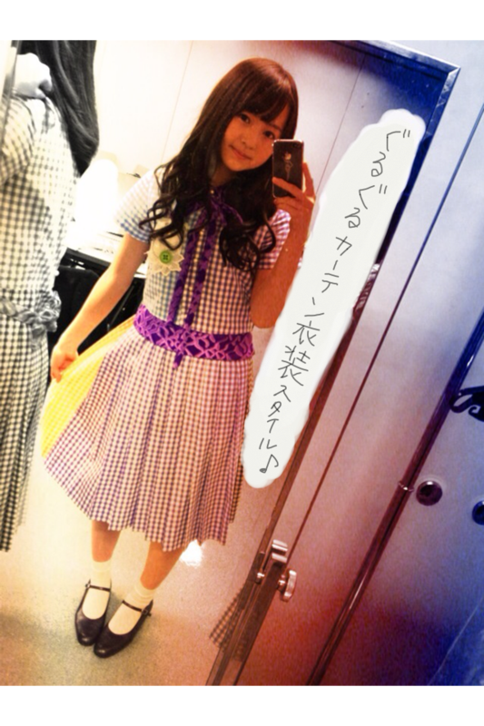

| 2012/02 06 Mon | 69回目*marika |
いつも読んでくださってる方、
初めて読んでくださった方、
コメントしてくださった方、
ありがとうございます:D
.....................
・べびたんはシャンプー何使ってる？
*****
オーガニックのを使ってます!!
・「ちほ*です!!」って言うので
覚えててくれますか??:-D
*****
覚えてます♡
いつもコメントありがとうございますっ>
・寒すぎるよ～
人類にもそろそろ冬眠制度
取り入れません(･ω･)？
*****
ん!!賛成じゃっ
冬は特にふとんん中に潜りたくなるわよね。
でもくっちゃねーくっちゃねーして
太っちゃうかもしれないxOあ
・自分も友達とベビたんの声マネしてますよｗ
ベビたんの声とか喋り方って
特徴あって、かわいいよね！
*****
うそ!!
どんなんどんなん^^??
でも私そんなに声でまねされたことないなあ。
乃木坂に入ってから、声特徴あるね!!
て言われるようになりました:3にへ
・逆に嫌いな季節はあるん？
*****
あのねー、夏がね!!
暑くて暑くて暑くて....
あ”ーーーーー
てなって
汗がどーーーーー
て出てきてなかなか
寝れなくて、そんで蝉の声に
い”ーーーーー
てなるので夏はちょいと苦手x(
でも、夕方の夏、夜の夏、
お祭りは好きです。
・ブログ書くん何分くらいかかってんのー？
*****
1〜3時間くらい:D
じっくり派だから^^*
・まりかはなんかはまってる飲み物とかあるのカナ？
*****
いちご豆乳とベリー系のヨーグルトと抹茶ラテカナ??
おいっしいのよ、これが。
ジンジャーエールはいつもおいしい**
・前のブログにタメ口の方が親近感って
言ってましたが、自分はタメ口苦手なので
敬語でも良いですかね(>_
慣れたらタメ口にします！
*****
いいですよ〜^^
早く仲良くなりたいです♪♪
･かずみんのモノマネ見たいです！
握手会の時見せてくれますか(^^)？
良かったら答えてください♪
*****
下手でもよいなら、全力でかずみになります笑
・特技の舌を3つに分けるってどゆこと？
*****
舌がくぼんでみょんみょんみょん
って(こんな風にUUU) なるんです:D
直接言ってくださったら披露しますぞ=3
・少女漫画読んでる男の人ってどう思う？
アリ？ナシ？
*****
アリっアリアリ♡
女の人が少年漫画読んでるのと同じで、
話が合いそう♪るんるん
・髪の長さ、ｱﾀｼも胸下まであるよーXO
乾かすの大変でしょ？(;・∀・)
何か髪の毛の美容液付けてる?(^ω^)
*****
乾かすの大変ですよね>
時間ない時は自然乾燥ですーうわ-ん
美容液は普段付けないです!!
・握手会の時、名前言ったら
ニックネーム付けてもらえますか？
*****
じゃあ頑張って付けようっと^^*
・べびたんゲームってやる？
*****
最近はあんまりしないな>
昔どうぶつの森やってました。
マリカーしたいです←
あっ、だいぶ前に
まいまいとマリカーやったんですよ。
前にも友達とやったことあるから
すごい自信あって
「私めっちゃ得意だよ。」
て宣言したんですよ。
そんでやったら出遅れて最下位で、
しかもバックして道戻ってしまったの。
....おかしい。あのときゃちょと調子が悪かったのよ。
普段ならもっとちゃんとできます。
・伊藤コンビ、仲良くやれてる？
*****
もち♡
ねねはね、私おしゃべりなので
私がぺらぺら話してるの
よくきいてくれて冷静にツッコみをいれるね笑
ちっちゃいってからかってます。
だって本当にちっちゃいんやもん笑
伊藤ちゃんずいいねっ♡きらきら
・貼るカイロと普通のカイロどっちが好き？笑
不思議な質問でごめんなさい笑
*****
そこからの
靴下に貼るカイロ。←
２択だと普通カイロかな＊
寒いですよね>
・メンバー内もしくは家族内で、
節分のイベントを何か行いましたか？
良かったら教えて下さいな。
*****
お家で豆食べました。
メンバーとは何もやってなかった;O!!
・私はまだ子供なんですけど
まりかちゃんは子供、好きですか？
ちなみに私は小学生です
*****
すきですーー♡♡
かぁわいいんだもんっ。
なでなでしたいな:3
とかゆーて
私もまだ子供だxOオーノー
今日はここまで＊
.....................
４日「GIRLS'FACTORY」
れなのアンダーとして
出演させていただきました。

私が衣装を来て、舞台で
ダンスを披露したのは初でした。
今までLessonで練習したことを
みなさんの前で披露ができるという喜び。
舞台に立てるチャンスをいただき、
本当にうれしかったです。
アンダーだけども、
アンダーとして、
乃木坂のメンバーとして、
精一杯の笑顔で楽しんで踊りました。
本番前にすごい緊張してたら
メンバーが手を握ってくれました。
「楽しもう」
とみんなで声を掛け合って。
これが今私にできることなんだと思いました!!
一瞬たりとも気が抜けません。
今回出演させていただいて
学んだことが沢山あります。
これから学ぶことも沢山あります。
選抜メンバーが忙しかったら
「私がやります!!」
の勢いでどんなのにでも出てやるっ!!
とにかく今を頑張って、
舞台で光ることができるように
次も舞台に立てるように
頑張っていきます!!!!
よっしゃ!!


ベビたん*****bA by marika